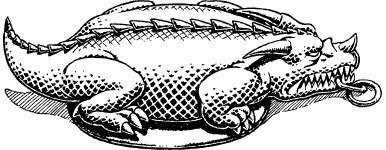

155
The moment you enter the beam, you feel yourself descending through the centre of the temple in a cocoon of shimmering blue light. Gradually the heat of the nest of fire gives way to a pleasant coolness, but as you continue your descent deeper and deeper into the unknown, this equable temperature slowly transforms into an unbearable icy chill. Never before have you experienced the terrible coldness that engulfs you now. Fortunately, the magical properties of the Scarab of the Wingless Dragon protect and keep you from freezing to death. (Record this Scarab on your Action Chart as a Special Item which you keep in your pocket.)
{kind=link}

As the temperature slowly begins to rise, you are able to examine the Scarab that you took from Huan’zhor’s nest, and at once you notice two runic numerals on the back of the wingless dragon, engraved on its surface. (The numerals comprise the number 31. Make a note of this number in the margin of your Action Chart for future reference.) Having satisfied your curiosity, you place the Scarab into the pocket of your tunic and wait patiently for the beam to complete its seemingly endless descent.
Eventually the shimmering light fades and you feel solid ground materialize beneath your feet once more. Stretching before you now lies a gigantic cavern. Its walls of cracked and stained obsidian rise to a high-arched roof where twelve stalactites of glowing lime-green stone form a circle. On the floor directly below this circle are the shattered remains of a crystal dais, its broken fragments glimmering in the cavern’s eerie, icy gloom.
If you have ever visited the city of Helgor in a previous Lone Wolf adventure, turn to 84.
If you have never visited this place, turn to 124.